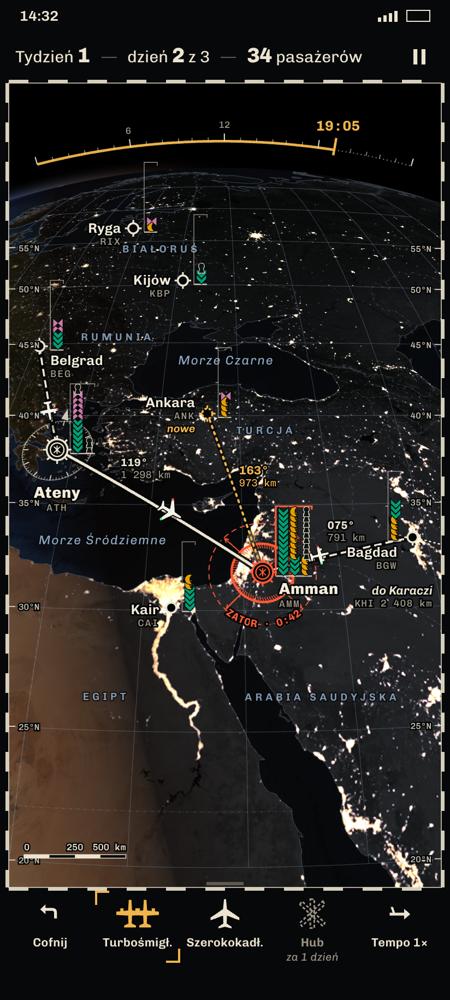
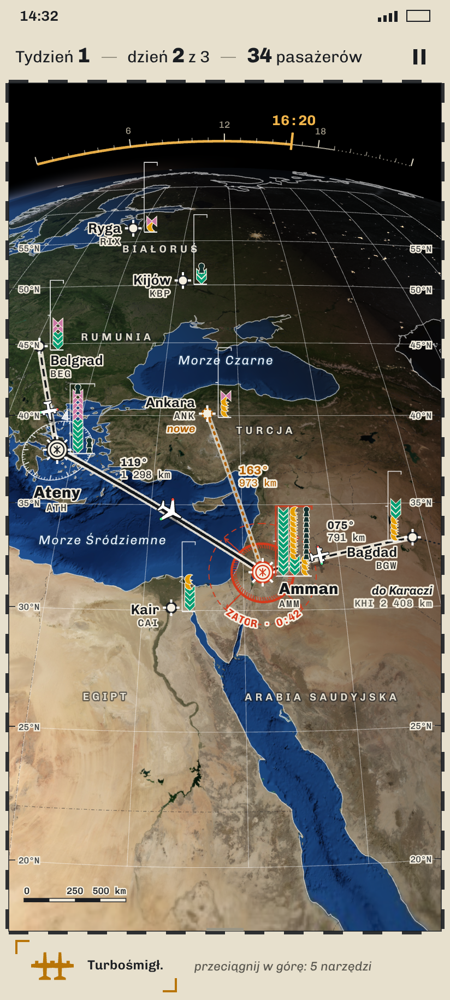
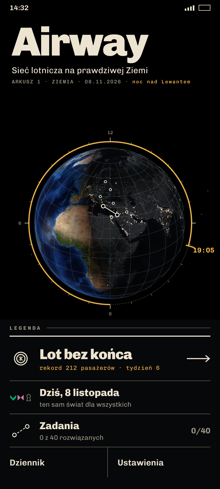
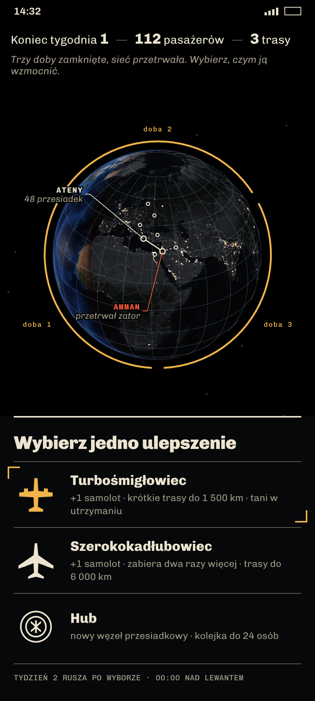
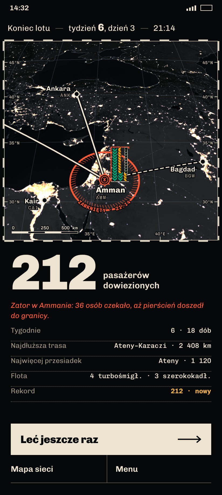

Globus K2 (NASA Blue Marble NG + Black Marble 2016, terminator od słońca), a cała informacja narysowana w świecie językiem map lotniczych: ramka arkusza ze współrzędnymi, siatka, symbole lotnisk z kodem, pasażerowie jako stos glifów D-08 z sufitem pojemności, zator jako kreskowana strefa rosnąca do granicy zamknięcia, kurs i odległość przy trasach, róża kursów, skala. Pora doby to cienka skala godzin na krawędzi globusa. Chivo + Chivo Mono (SIL OFL). Kadry 412×915 pt (PNG 824×1830).




